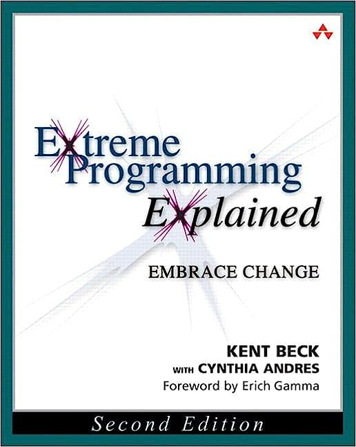

<article>
    <div class="flex-parent">
        <div class="flex-child">
            
        </div>
        <div class="flex-child">
            <p>
                A guide to the XP process, this book is intended for software developers and project managers. It
                covers XP practices and the rationale behind them. It focuses on the application of programming
                techniques, clear communication, and teamwork. Intended to be used as a reference for XP practitioners
                or those considering adopting XP, this book is well worth your time.
            </p>
            <h4>Tenants</h4>
            <ul>
                <li>Lightweight</li>
                <li>Addresses constraint in software development</li>
                <li>Adaptable and responsive to change</li>
                <li>Vulnerability is safety. Don't hold back. Go all in.</li>
                <li>XP addresses risk at all levels of development. </li>
            </ul>
        </div>
</article>